Revisiting ggplot2
Attendance Check-In Code
Enter the attendance code for today’s seminar to log your attendance.
You can log your attendance on iSheffield
The material we cover today is from Kieran Healy’s freely available textbook Data Visualization: A Practical Introduction. The link to this book can be found on our Blackboard page.
For today’s lecture, follow along using the shell script on Blackboard entitled Week8_Part2_ClassShell.R.
ggplot2We looked at some of the basics of ggplot2 in a previous lecture. Now, let’s expand the range of things you can do with it.
In R and ggplot2, errors in code can result in figures that don’t look right. There are some very useful features of ggplot that also commonly cause trouble. We will explore some of these features today.
ggplot implements the Grammar of Graphicsggplot a series of grammatically correct instructions that are either nonsensical in some way, or have accidentally twisted what you meant to say. It’s likely that ggplot does not have all the information it needs to make your graphic say what you want it to say.gapminder dataOur first example will use the gapminder dataset. This dataset tracks economic and social indicators (e.g., life expectancy, GDP per capita) over time. You will need to install the package before loading the library.
# A tibble: 8 × 6
country continent year lifeExp pop gdpPercap
<fct> <fct> <int> <dbl> <int> <dbl>
1 Afghanistan Asia 1952 28.8 8425333 779.
2 Afghanistan Asia 1957 30.3 9240934 821.
3 Afghanistan Asia 1962 32.0 10267083 853.
4 Afghanistan Asia 1967 34.0 11537966 836.
5 Afghanistan Asia 1972 36.1 13079460 740.
6 Afghanistan Asia 1977 38.4 14880372 786.
7 Afghanistan Asia 1982 39.9 12881816 978.
8 Afghanistan Asia 1987 40.8 13867957 852.Let’s suppose we wanted to plot the trajectory of life expectancy (lifeExp) over time for each country (country) in the data (gapminder). We run the code below and end up with this plot.
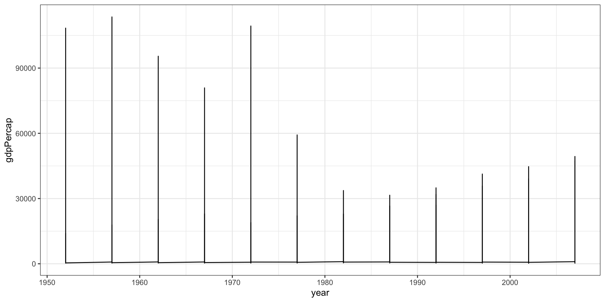
The plot runs, but something has clearly gone wrong. ggplot has guessed at the structure of the data but it doesn’t know that the yearly observations (year) are grouped by country (country).
Without telling ggplot this, geom_line() has tried to join up all the lines for each particular year in the order they appeared in the dataset. The result is a meaningless plot.
Typically, when ggplot successfully makes a plot but the results are not what you expected something has gone wrong in the mapping between the data and aesthetics for the geom being used.
Trying again - this time we can use the group aesthetic to tell ggplot explicitly about the data’s country-level structure.
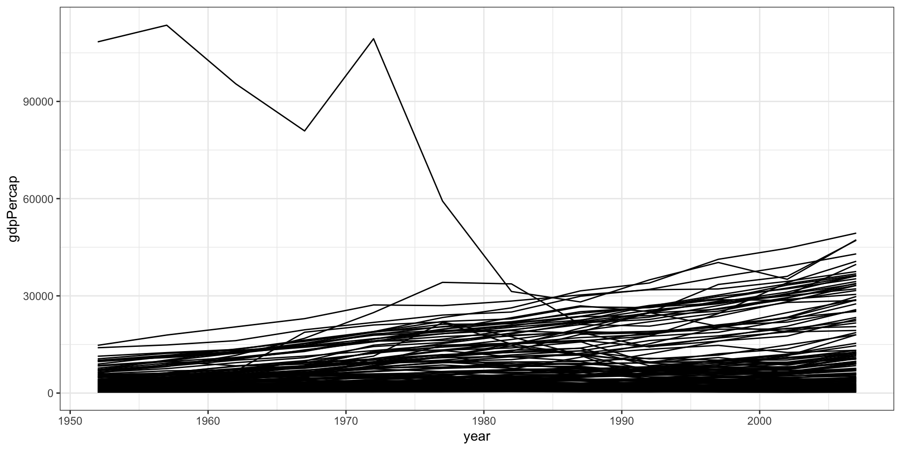
Now the plot is showing the data properly (i.e., each line represents a single country over time).
The group aesthetic is usually only needed when the grouping information you need to tell ggplot about is not built into the variables being mapped. Here, we map x to year but there is no information in the year variable itself that tells ggplot that it’s grouped by country.
facet_wrap()Let’s revisit facet_wrap() to make the plot easier to read. Faceting the data allows a lot of information to be presented compactly and in a consistently comparable way.
Facets are not a geom; they are a way of organising a series of geoms.
facet_wrap()Our data contains a continent (continent) variable, so let’s try facet wrapping by continent.
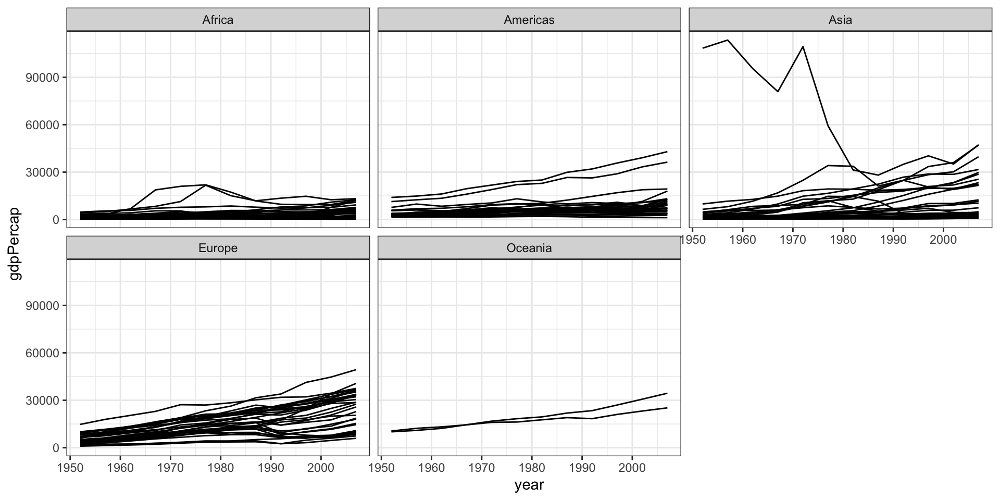
facet_wrap()facet_wrap(); they will be layered within each facet.ncol argument within facet_wrap() to control the number of columns used to lay out the facets.facet_wrap()Let’s try making this plot again. We will put all five continents in a single row (i.e., 5 columns), add a smoother, and some cosmetic enhancements to make the graph more effective (e.g., country trends in light grey).
Tip: Take advantage of the additive character of ggplot
+ some_function(...) statement one at a time to see how the plot changes.facet_wrap()This plot brings together an aesthetic mapping of x and y variables, a grouping aesthetic country), two geoms (line point and smoother), a log-transformed y-axis with appropriate tick labels, a faceting variable (continent), and title and axes labels.
p <- ggplot(data = gapminder, mapping = aes(x = year, y = gdpPercap)) +
geom_line(color="gray70", aes(group = country)) +
geom_smooth(size = 1.1, method = "loess", se = FALSE) +
scale_y_log10(labels=scales::dollar) +
facet_wrap(~ continent, ncol = 5) +
labs(x = "Year",
y = "GDP per capita",
title = "GDP per capita on Five Continents") +
theme_bw()facet_wrap()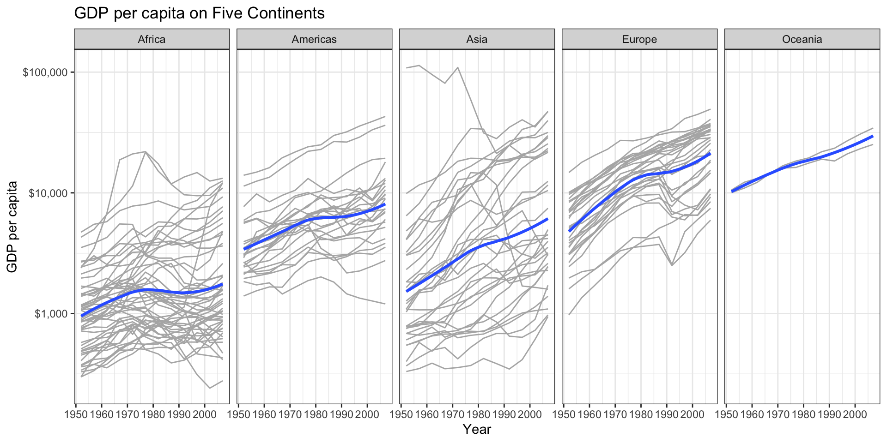
facet_grid()facet_wrap() is good for when you want a series of small multiples based on a single categorical variable.
Facets can be more complex, such as cross-classifying data by two categorical variables. For this, we may wish to try facet_grid()
gssr dataOur next example will use the gssr dataset. This dataset tracks economic and social indicators (e.g., life expectancy, GDP per capita) over time. You will need to install the package before loading the library.
To install, run this code:
Once you’ve loaded the library, call data(gss_all) in the console.
facet_grid()Survey data is often categorical. Categories might be unordered (i.e., nominal variables) or ordered (i.e., ordinal variables like educational attainment).
Let’s make a smoothed scatterplot looking at the relation between the age of the respondent (age) and the number of children they have (childs). We will facet this relationship by sex (sex) and race (race) of respondent.
facet_grid()# Convert sex and race to factor with labels
gss_data <- gss_all %>%
mutate(
sex = factor(sex, levels = c(1, 2), labels = c("Male", "Female")),
race = factor(race, levels = c(1, 2, 3), labels = c("White", "Black", "Other"))) %>%
filter(!is.na(age) & !is.na(childs) & !is.na(sex) & !is.na(race))
# Plot (skipping NA)
p <- ggplot(data = gss_data,
mapping = aes(x = age, y = childs)) +
geom_point(alpha = 0.2) +
geom_smooth() +
facet_grid(sex ~ race) +
theme_bw()
pfacet_grid()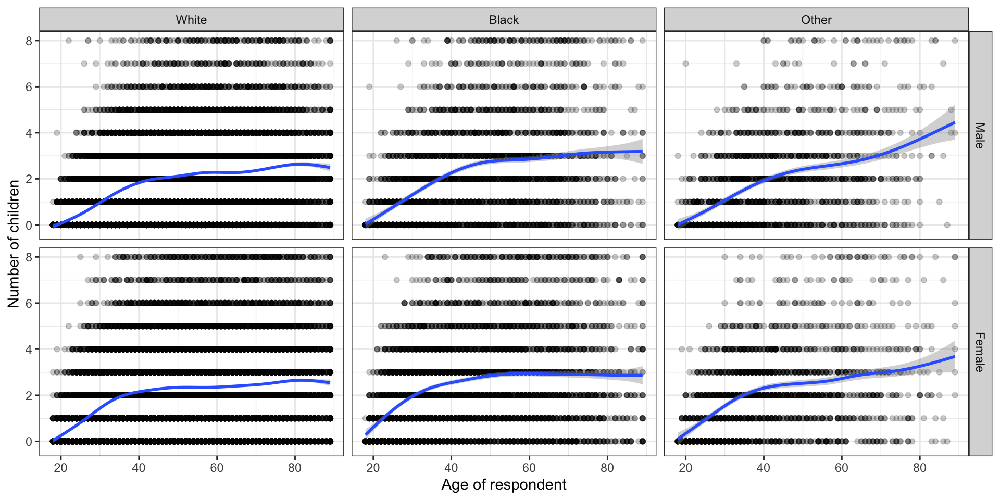
We have seen how geom_smooth() can be included as a way to add a trend line to a plot.
Some geoms plot our data directly on the plot (e.g., geom_point()), but other geoms do more work on the data before it gets plotted.
Every geom_ function has an associated stat_ function that it uses by default and vice versa.
Recall that we can produce a figure with geom_bar. We will use our mpg data again, specifying just one mapping, aes(x = mpg). The y-axis variable, count has been calculated for us. Behind the scenes geom_bar calls stat_count() by default.
The stat_count() function computes two new variables, count and prop (short for proportion). geom_bar uses count by default.
We can call the temporary variable if we want the relative frequencies (proportion) rather than counts using after_stat(prop). We need to tell ggplot to ignore the x-categories when calculating denominator of the proportion, and use the total number observations instead. To do so we specify group = 1 inside the aes() call.
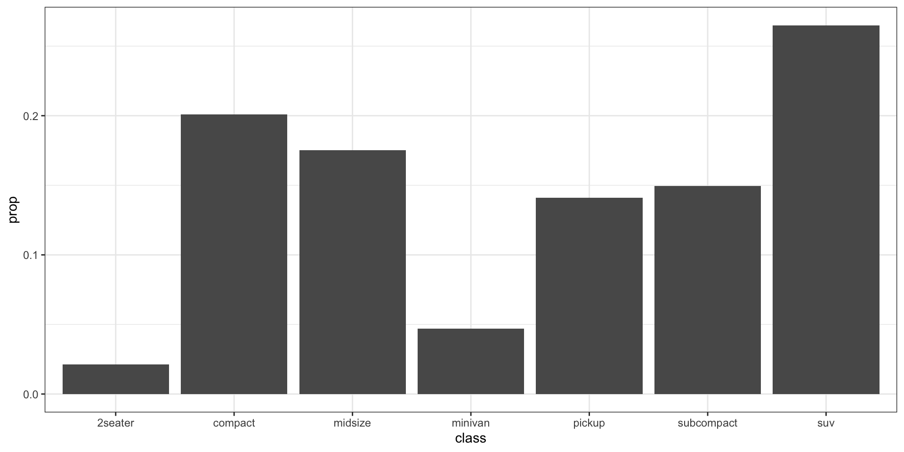
The gray bars can be a bit boring. We can fill them with colour by mapping the drive (drv) variable to fill in addition to mapping it to x. We use fill for painting the insides of shapes. If we only map to color, only the border lines of the bars will be assigned colours.
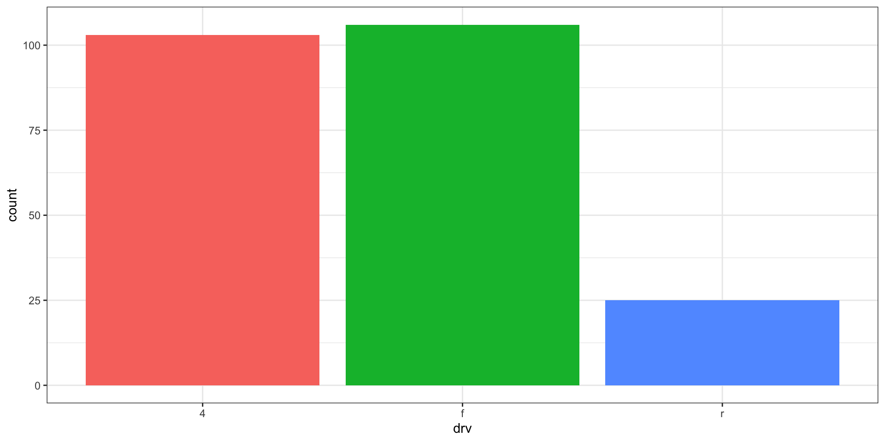
fill aesthetic with geom_bar() is to cross-classify two categorical variables.diamonds dataset, which is built-in to ggplot2, to examine the distribution of diamond cuts (cut) across different clarity grades (clarity).cut) by clarity grade (clarity).geom_bar() is a stacked bar chart with counts on the y-axis.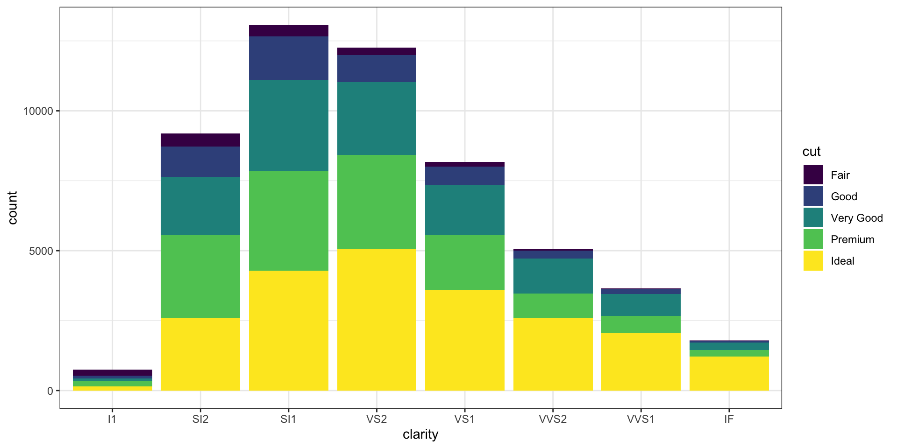
position = fillSetting the position argument to "fill" normalises the bars, making them all the same height. This makes it easier to compare proportions across groups, but you lose the ability to see the relative size of each group with respect to the overall total.
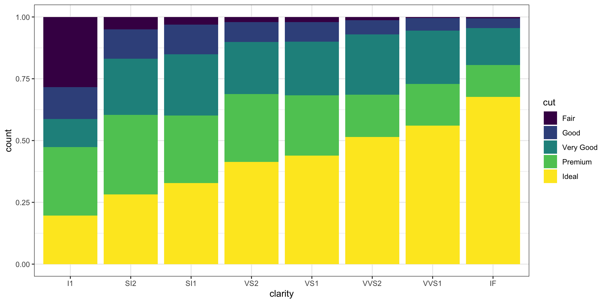
To show proportions side-by-side, we can use position = "dodge". However, in doing this, ggplot will change the y-axis back to count. One thing we can try is mapping y = after_stat(prop) to show proportions, but this often leads to issues with grouping. For example, let’s run the code below:
We can see the proportions across clarity grades for each cut, not within clarity grade.
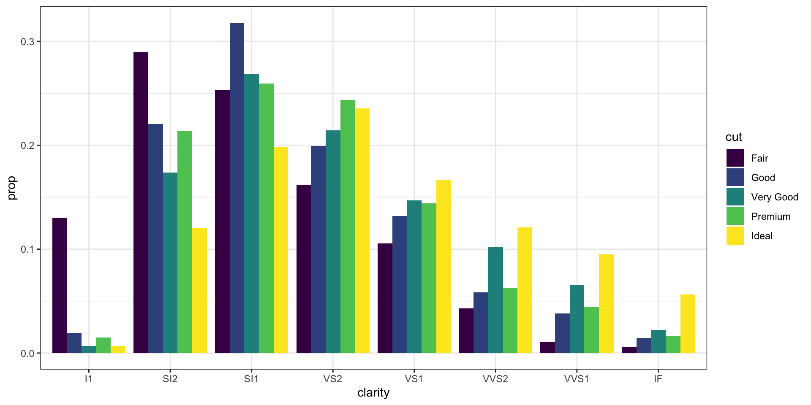
The easiest thing to do is to stop trying to force geom_bar() to do all the work in a single step. A more reliable approach is to facet the plot. We can create a proportional bar chart of diamond cuts and then facet that by clarity grade. The proportions are calculated within each panel, providing the desired breakdown.
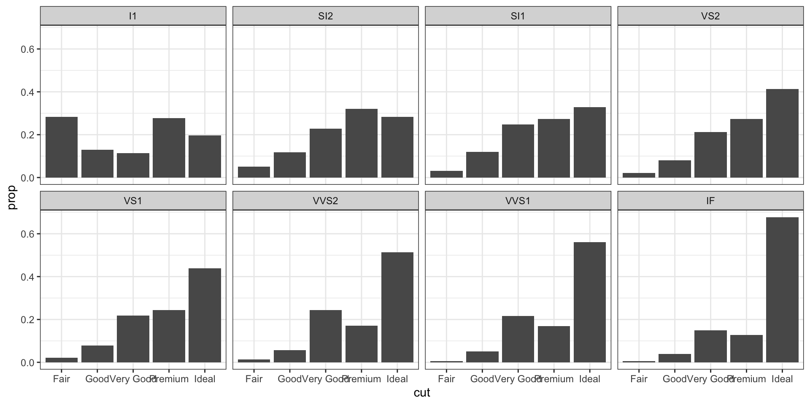
Different geoms transform data in different ways, but the vocabulary for them is consistent. For example, we can see similar transformations when summarising a continuous variable using a histogram.
Recall: A histogram summarises a continuous variable by binning data and counting observations.
In a bar chart, the categories are given to us going in, but with a histogram we have to decide how finely to bin the data.
geom_histogram() automatically chooses a bin size, but you can specify it with the bins argument.
Let’s look at an example from the midwest dataset. This dataset contains information on counties in several Midwestern states in the USA. Counties vary in size, so let’s make a histogram of the distribution of their geographical areas (area).
Because we are summarising a continuous variable using a series of bars, we need to divide the observations into groups, or bins, and count how many are in each one. geom_histogram() automatically chooses a bin size, but you can specify it with the bins argument.
Just like with bar charts, a newly-calculated variable, count, appears on the x-axis. Behind the scenes the stat_bin() function picked 30 bins, but we might want to try something else.
While histograms summarise single variables, it’s also possible to use several at once to compare distributions. We can facet histograms by some variable of interest, or we can compare them in the same plot using the fill mapping.
Here, we subset the data to pick out two states (Ohio - OH and Wisconsin - WI). Then we use the subset() function to take our data and filter it so that only the rows whose state name is in the vector are selected. The %in% operator is a convenient way to filter on more than one term in a variable when using subset().
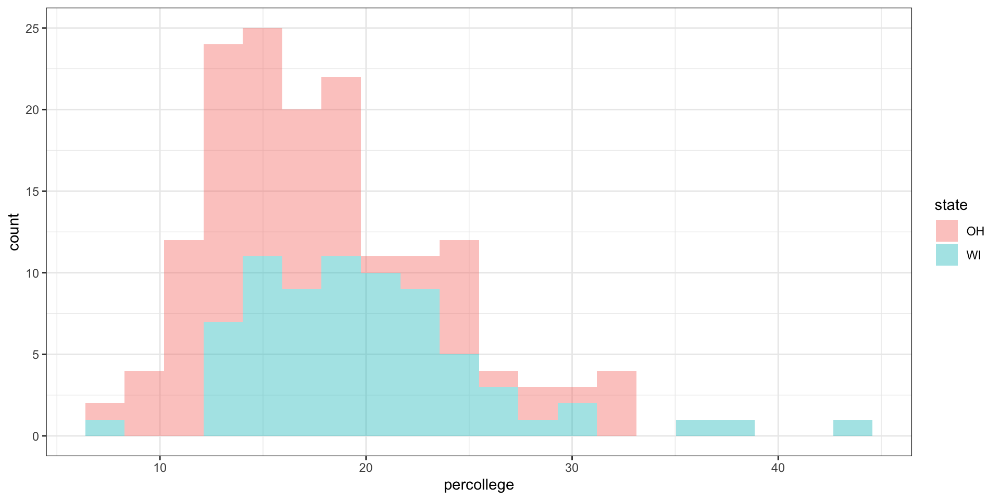
The geom_density() function will calculate a kernel density estimate of the underlying distribution for a continuous variable.
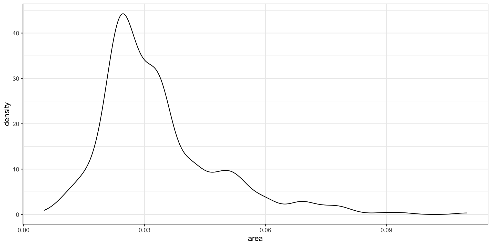
We can use color (for lines) and fill (for body of curve). We can adjust transparency with alpha to manage overlap.
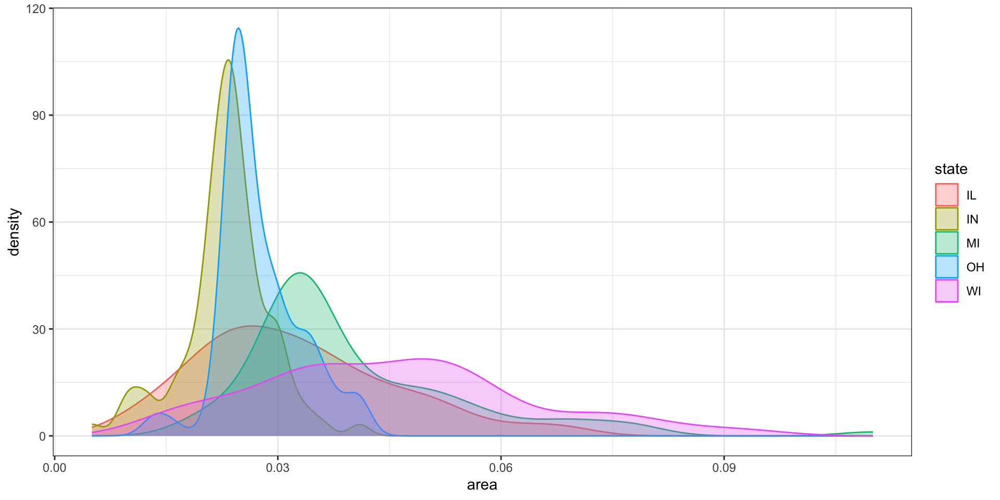
Like geom_bar(), the count-based defaults computed by the stat_ functions for geom_histogram() and geom_density() can return proportional measures.
For geom_density(), the stat_density() function can return its default ..density.. statistic, or ..scaled.., which will give a proportional density estimate.
It can also return a statistic called ..count.., which is the density times the number of points. This can be used in stacked density plots.
Here we can see an example of the scaled densities for a subset of our data, where we are looking at Ohio (OH) and Wisconsin (WI).
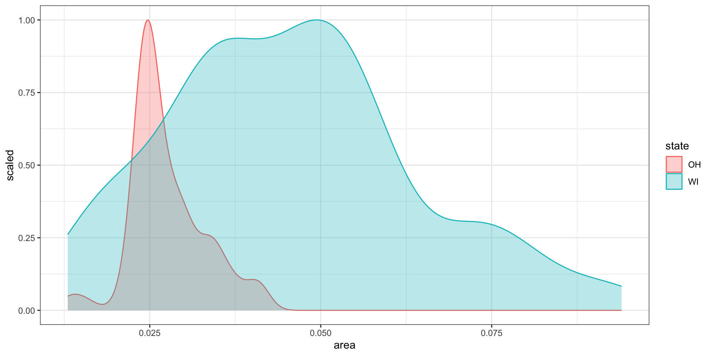
ggplot2 is designed to be smart. When you use geom_bar(), it automatically performs a calculation for you: it counts the number of observations for each category and uses that count to set the height of the bars. This is done behind the scenes by a “statistical transformation” called stat_count().
But what if you’ve already done the counting? What if your data is already a summary table, with a variable that contains the values you want to plot directly? In this case, you need to tell ggplot2 to turn off its automatic calculations.
stat = "identity"To tell geom_bar() to plot the values exactly as they are in your data, you use the argument stat = "identity". This is like saying, “The identity of the data is what you see in the y aesthetic — don’t change it.”
stat = "identity"Let’s suppose we have this titanic data. We don’t have individual-level data on who survived, but we have a small table of counts of survivors by sex.
titanic <- data.frame(
fate = c("perished", "perished", "survived", "survived"),
sex = c("male", "female", "male", "female"),
n = c(1364, 126, 367, 344),
percent = c(62.0, 5.7, 16.7, 15.6)
)
titanic fate sex n percent
1 perished male 1364 62.0
2 perished female 126 5.7
3 survived male 367 16.7
4 survived female 344 15.6stat = "identity"Because we are working directly with percentage values in a summary table, we no longer have any need for ggplot2 to count up values for us or perform any other calculations.
We can tell geom_bar() not to do any work on the variable before plotting it with stat = 'identity' in the geom_bar() call.
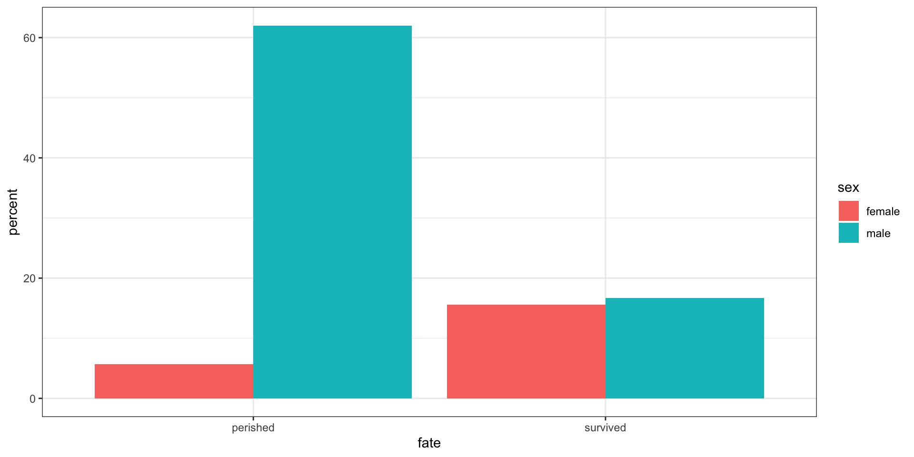
geom_col(): The Convenient ShortcutBecause plotting summary data is such a common task, ggplot2 provides a convenient shortcut: geom_col(). This geom is identical to geom_bar(stat = "identity"). It’s designed specifically for when your data already has the x and y values you want to plot.
geom_col() is also perfect for plotting data with both positive and negative values in a bar chart. This is a great way to visualise changes or differences from a baseline.
geom_col(): The Convenient ShortcutConsider the oecd_sum dataset (from socviz package), which shows the difference in life expectancy between the US and the OECD average over time.
The diff column contains both positive (US below OECD) and negative (US above OECD) values.
# A tibble: 57 × 5
# Groups: year [57]
year other usa diff hi_lo
<int> <dbl> <dbl> <dbl> <chr>
1 1960 68.6 69.9 1.30 Below
2 1961 69.2 70.4 1.20 Below
3 1962 68.9 70.2 1.30 Below
4 1963 69.1 70 0.900 Below
5 1964 69.5 70.3 0.800 Below
6 1965 69.6 70.3 0.700 Below
7 1966 69.9 70.3 0.400 Below
8 1967 70.1 70.7 0.600 Below
9 1968 70.1 70.4 0.300 Below
10 1969 70.1 70.6 0.5 Below
# ℹ 47 more rowsgeom_col() with Positive and Negative ValuesWe can use geom_col() to plot the diff column directly. We’ll also use the hi_lo variable to colour the bars, providing a quick visual cue as to whether the US was above or below the average.
Notice that we don’t need stat = "identity"; geom_col() assumes it by default.
geom_col() with Positive and Negative Values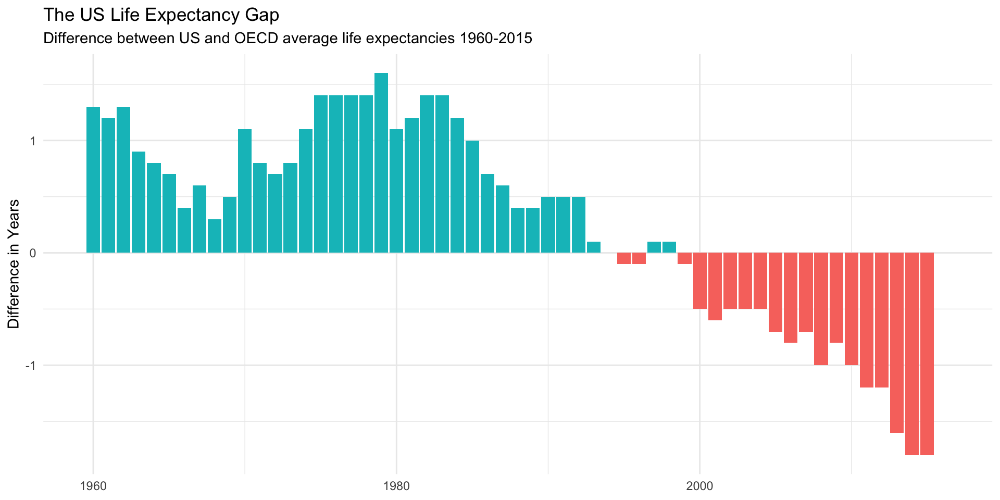
ggplot2 is a powerful tool for visualisation. It is important to think about the “grammar” when creating visualisations in ggplot2 to ensure that the plot is doing what you want it to do.
Give it a try
Work through this week’s worksheet, which can be found on Blackboard.
Anything you don’t finish, should be completed for homework.
Burr PSY6422